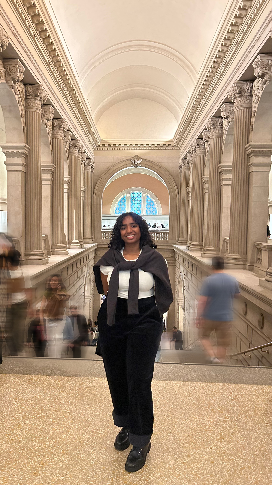

About the Designer
Hello! I’m Arpitha Prasad, a UX designer driven by curiosity, clarity, and the desire to make digital experiences feel natural. My process focuses on how people understand, navigate, and emotionally connect with interfaces - creating designs that are intuitive yet engaging.
With a background in architecture, I bring a strong sense of structure, spatial awareness, and systems thinking to my design work. That foundation helps me think through complex user flows, organize information hierarchies, and craft interactions that feel grounded and intentional.
I’m especially interested in how small details — motion, rhythm, microinteractions — can shape a user’s overall perception of a product. To me, UX is about designing the invisible: everything that makes an experience feel effortless.
Design Interests
- Visual Design — compositions that balance function and emotion.
- Interaction Design — intuitive flows and responsive motion.
- Accessibility — inclusive, user-respectful experiences.
- Experimental Prototyping — treating the browser as a creative tool.
Reflection on The Little UX Lab
The Little UX Lab began as a class project and grew into a personal exploration of how microinteractions shape experience. I learned that motion isn’t decoration, it’s communication. Each experiment deepened my understanding of how design decisions influence behavior and emotion.
Looking Ahead
I hope to work on projects that combine utility with creativity, blending storytelling, motion, and technology to craft meaningful interactions. I’m curious about emotional design and multisensory feedback as the next chapter of UX.
If The Little UX Lab represents one idea, it’s that design is an ongoing experiment - and I’m always ready for the next one.